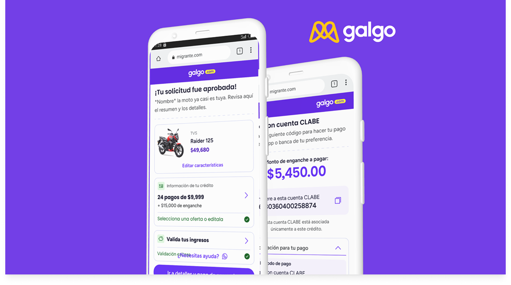
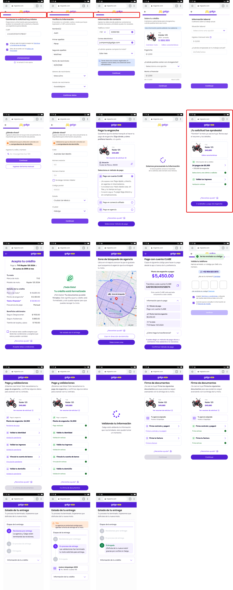
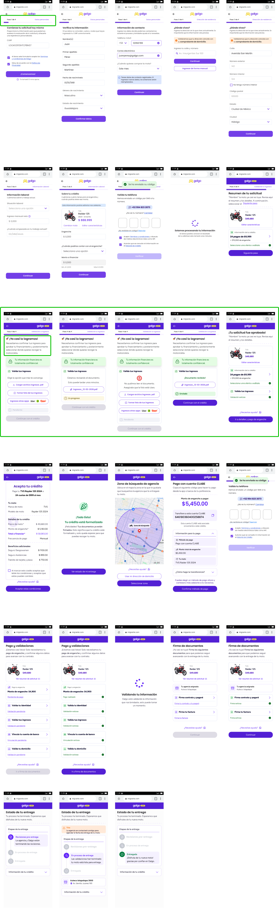

Designing a mobile-first credit product for workers in LATAM who have been systematically excluded from traditional banking — people with real financial needs but no credit history.

Overview
Galgo is a fintech platform that provides loans for informal workers who don't have traditional income certification. The product existed — but a critical problem was identified: users were abandoning the credit validation flow before completing it.
The flow had too many screens, too many unexplained fields, and confusing messages asking for high-denomination bills at every step. My role was to research why this was happening and redesign the flow to fix it.
The core problem
"The lenders identified a critical drop-off: the credit validation process was so fragmented and confusing that users gave up before getting approved."
01 — Hypothesis
Before talking to users, we defined what we believed to be true — so that research could confirm or disprove it, not just validate it.
Hypothesis 1 · Sign: High abandonment rate
The credit validation process has many stages and fields which can cause user fatigue, leading them to abandon the process even before finishing it.
Hypothesis 2 · Sign: High abandonment rate
The process is confusing because at each screen, a message appears for no apparent reason asking for high-denomination bills — users don't understand why this is required repeatedly throughout the flow.
Hypothesis 3 · Sign: Opt-out during process
Validating documents by proof of income can be completed faster with UI that surfaces personal income information in context, reducing the cognitive load at the upload step.
02 — Research
Research method: User Interview. I conducted sessions with informal workers and middle-school parents — the two primary user groups applying for credit through Galgo.
The goal was to understand what they expected from a credit application, what moments broke their trust, and what they did when they didn't understand a step.
Interview questions
1. What is the credit validation process to you?
2. Who have you sought credit or a loan from before?
3. What do you know about uploading proof of payment or proof of income to a financial app?
4. What made you decide to apply for credit with Galgo?
03 — Current Flow
Before redesigning anything, I documented the complete credit validation journey as it existed. Every screen was mapped and evaluated against the hypotheses. The screens highlighted in red are the exact moments where users consistently stopped — too many fields, unclear instructions, or requests that felt unjustified.

Current flow — problem screens highlighted in red
04 — Redesign
Three key changes drove the redesign: better screen order (group related information, don't scatter it), clearer communication (explain why each field is needed at the moment it's asked), and visible progress indicators (users need to know how far they've come and how much is left).
Key changes applied
Screen order · Clearer communication · Progress indicators throughout

Redesigned flow — improvements highlighted in green
05 — Outcome
The redesigned credit validation flow addressed all three hypotheses: reduced the number of screens users had to navigate, removed confusing recurring denomination messages, and added progress context that kept users engaged through completion.
3
Hypotheses validated through user research
4
Research interviews conducted
↓
Friction reduced across the validation flow